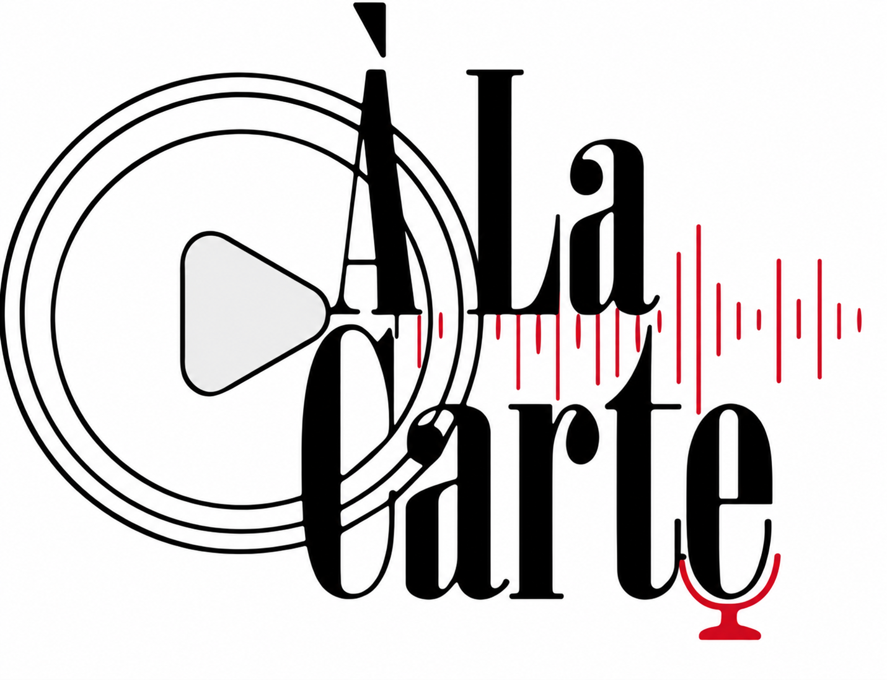

PODCAST • CONVERSA • PERSPECTIVA
Nem toda conversa é fácil de começar.
Um podcast feito para colocar ideias à mesa, ouvir diferentes perspectivas e dar espaço para conversas que normalmente ficam para depois.
conhecer o podcast ↓
01 / CONVERSA
Algumas conversas acontecem naturalmente. Outras precisam de espaço.
O QUE É O À LA CARTE?
QUATRO VOZES.
UMA MESA.
MUITAS IDEIAS.
Conversas servidas sem receita pronta.
O À La Carte nasce da vontade de transformar uma conversa comum em algo que vale a pena ouvir. Aqui, diferentes opiniões, experiências e formas de enxergar o mundo dividem o mesmo espaço.
Não buscamos respostas perfeitas. Queremos perguntas, reações, contrapontos e aquelas pausas em que todo mundo precisa pensar um pouco antes de continuar.
EM BREVE
PRIMEIRO
EPISÓDIO
O que acontece quando a conversa finalmente começa?
No nosso primeiro episódio, colocamos diferentes pontos de vista frente a frente em uma conversa aberta, espontânea e sem roteiro para respostas fáceis.
▶ assistir o episodio ↗OUVIR.
PENSAR.
CONVERSAR.
POR TRÁS DOS MICROFONES